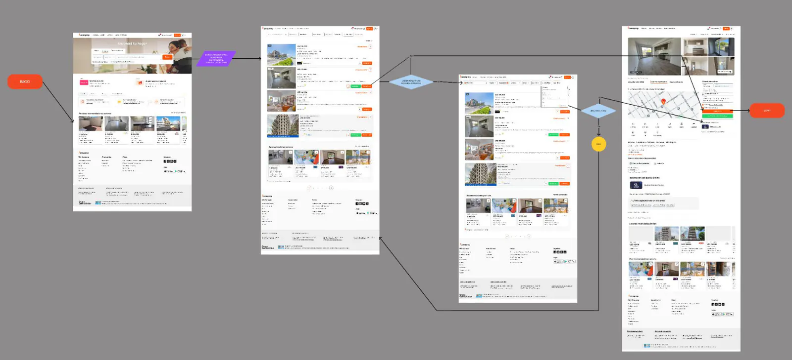
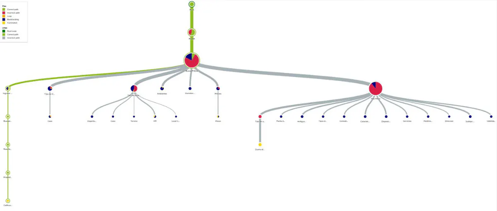

UX research · Rediseño web · 2026
Caso de estudioZonaprop: encontrar depto sin perderse en los filtros
Investigué por qué buscar una propiedad en Zonaprop cuesta más de lo que debería y propuse una nueva arquitectura para los filtros y los avisos.
- Contexto
- Proyecto individual del curso Diseño UX/UI Avanzado, Coderhouse · 2026
- Métodos
- Evaluación heurística, benchmark, encuesta, user persona, journey map, tree testing, Lean UX Canvas
- Herramientas
- Figma, UXtweak, Google Forms
- Estado
- Propuesta en alta fidelidad, sin validar con usuarios

El problema
Para lo básico —zona y cantidad de ambientes— hay que entrar a «Más filtros», donde aparecen decenas de opciones a la vez. Y en el listado no queda claro si el aviso lo publica un dueño o una inmobiliaria, que es justo lo que define si alguien se anima a escribir.
20%
encontró cómo distinguir «dueño directo» de «inmobiliaria» en el tree test. El 80 % se equivocó de camino.
40%
completó la búsqueda por inmobiliaria, y apenas un 20 % lo hizo sin dar vueltas.
89,9%
de las personas encuestadas dijo que es determinante ver claramente quién publica.
Lo que hice
Arranqué por una evaluación con las 10 heurísticas de Nielsen y un benchmark contra Argenprop y RE/MAX. Después encuesté a personas de 20 a 45 años que habían usado Zonaprop para alquilar o comprar, armé el user persona y su journey map, y puse a prueba la arquitectura actual con un tree test de dos tareas.
El resultado cambió el foco: el problema no era la dificultad de las tareas sino cómo estaban organizados y nombrados los filtros.

Qué propuse
- Una búsqueda inicial con solo dos filtros, ubicación y ambientes: los que la gente dijo usar siempre.
- El tipo de anunciante visible en cada resultado y como filtro de primer nivel, no escondido en «Más filtros».
- Mostrar cuántos resultados va a dar un filtro antes de aplicarlo y avisar cuando una combinación da cero, en lugar de devolver una pantalla vacía sin explicación.
Estado
Quedaron la nueva arquitectura de información, los task flows, el wireflow, una guía de voz y tono y un prototipo en alta en Figma. La propuesta todavía no se validó con usuarios: el próximo paso es un test moderado con 5 a 7 personas que mida el tiempo hasta el contacto y la confianza percibida.